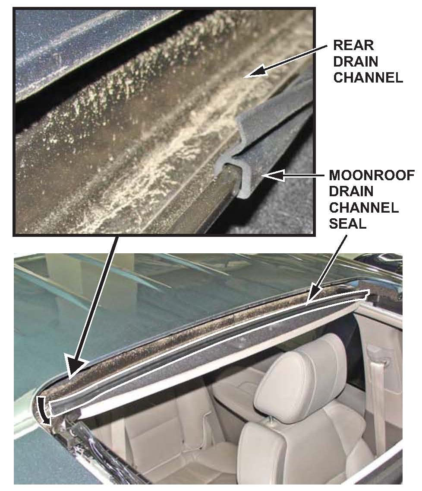

Body - Water Leaks At The Rear Of The Moonroof
08-015March 26, 2010
*Applies To:
2007-10 MDX - ALL*
Water Leak at the Rear of the Moon roof
(Supersedes 08-015, dated May 13, 2008, to revise the information marked by asterisks)
*REVISION SUMMARY
In Applies To and REPAIR PROCEDURE, 2009-10 models were added.*
SYMPTOM
Water enters the vehicle through the rear section of the moon roof.
PROBABLE CAUSE
Water splashes out of the drain channel into the interior of the vehicle.
CORRECTIVE ACTION
Install a moonroof drain channel seal.
PARTS INFORMATION
Moonroof Drain Channel Seal:
P/N 70251-STX-305
WARRANTY CLAIM INFORMATION
The normal warranty applies.
Operation Number: 8141M4
Flat Rate Time: 0.4 hour
Failed Part: P/N 70200-STX-A01
Defect Code: 03801
Symptom Code: 05907
Template ID: 08-015A
Skill Level: Repair Technician
REPAIR PROCEDURE
1. Remove the moonroof glass to gain access to the rear drain channel:
^ Refer to page 20-65 of the 07-09 MDX Service Manual, or page 20-63 of the 2010 MDX Service Manual, or
^ Online, enter keywords MOON GLASS, and select Moon roof Glass Replacement from the list.

2. Install a new seal on the front edge of the rear drain channel:
^ Attach the lower lip of the seal starting at one corner of the drain.
^ Roll the seal up and rearward over the lip until it is installed all the way across the drain channel.
^ Make sure the seal is centered.
3. Reinstall the moonroof glass in the reverse order of removal.

Disclaimer